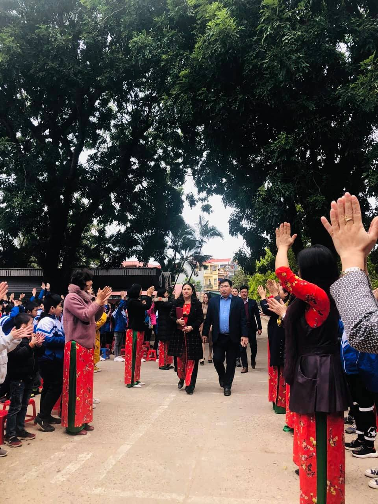
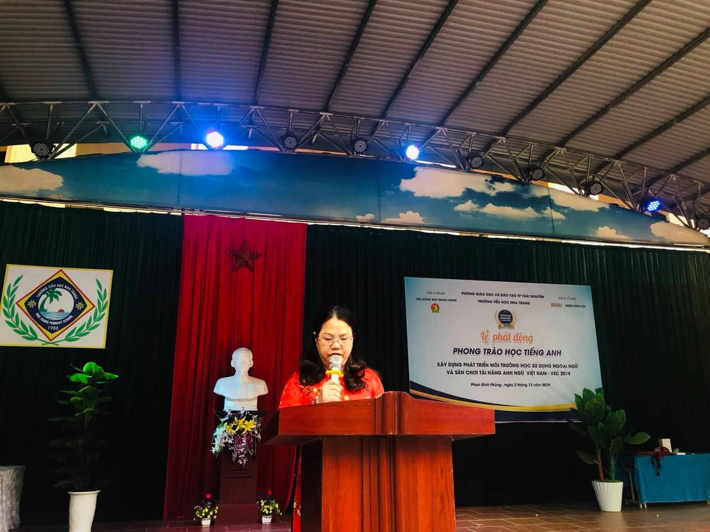
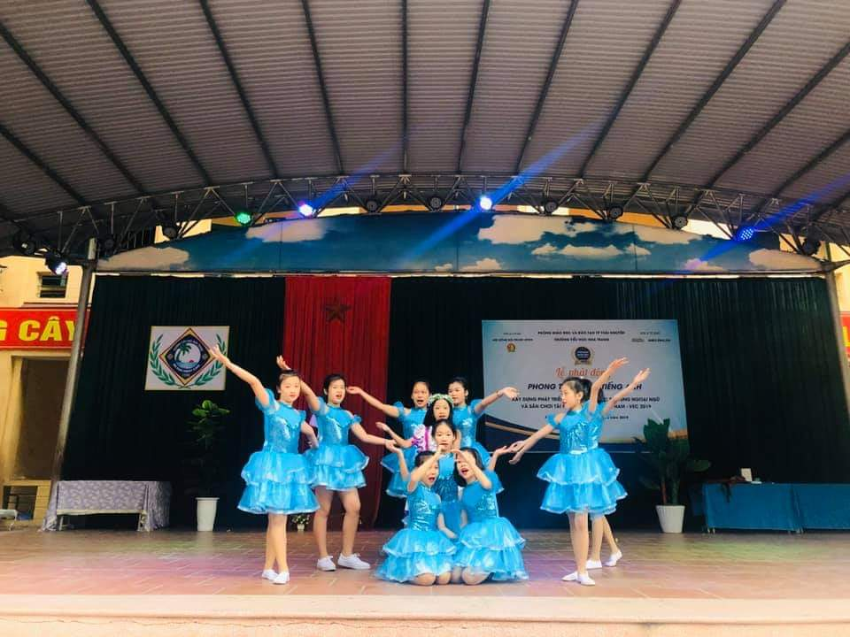
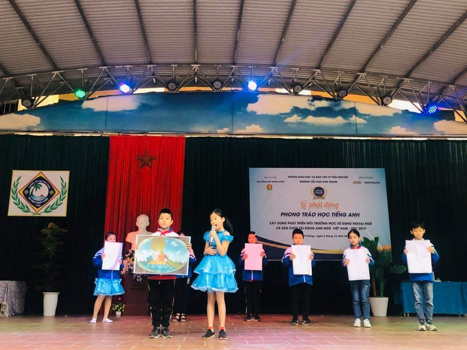
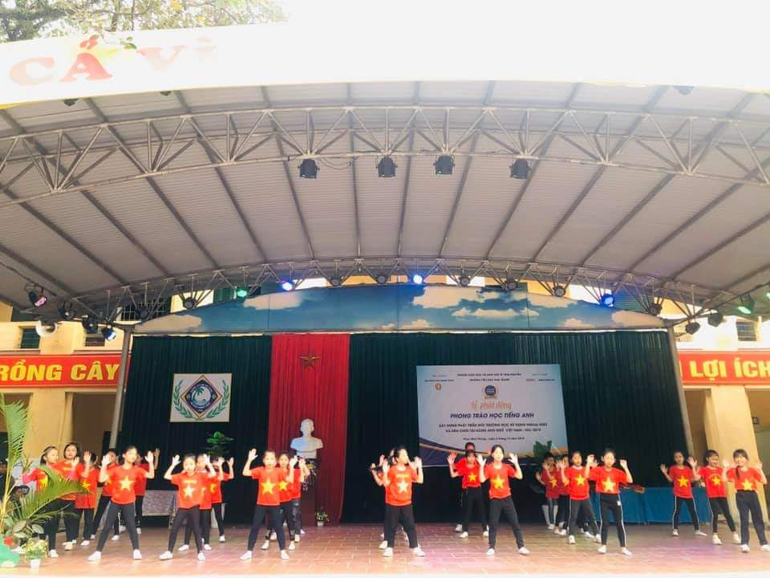
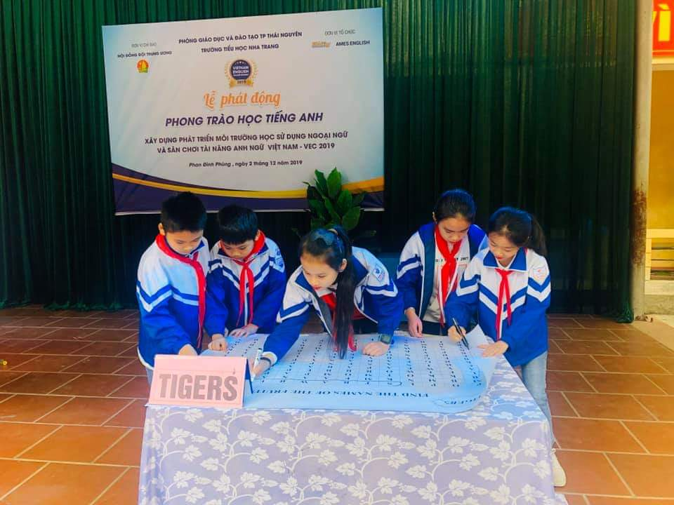
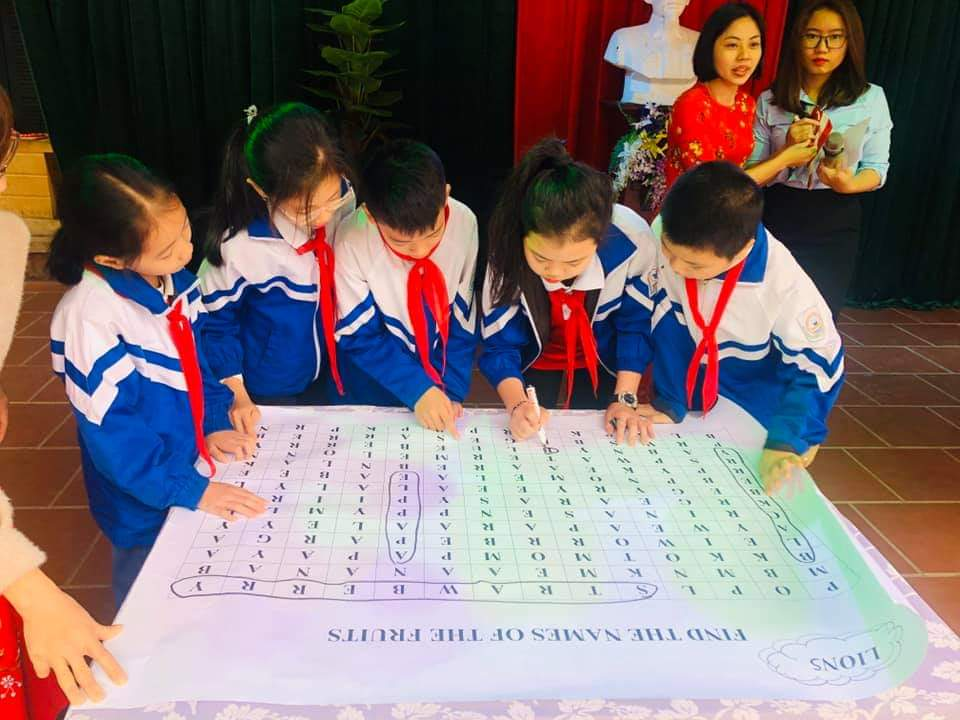
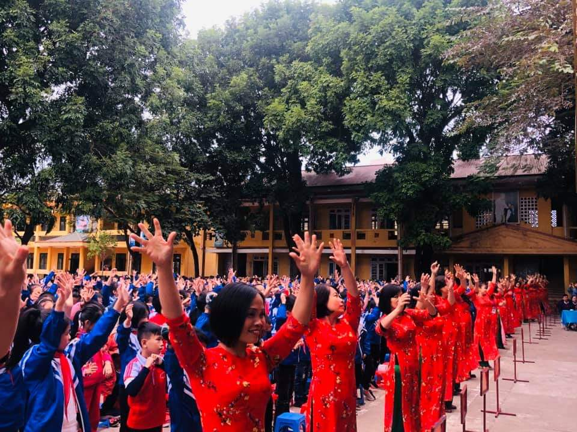

Trường TH Nha Trang phối hợp với Trung tâm anh ngữ AMES Thái Nguyên tổ chức Lễ phát động “Phong trào học tập Tiếng Anh xây dựng và phát triển môi trường học, sử dụng Ngoại ngữ” và “Sân chơi tài năng Anh ngữ Việt Nam năm 2019
Trong thời kỳ phát triển và hội nhập của đất nước, vai trò của ngoại ngữ là hết sức quan trọng, đặc biệt là Tiếng Anh, một ngôn ngữ phổ thông được sử dụng trên toàn thế giới. Thông qua việc sử dụng ngoại ngữ, chúng ta có thể học tập, trao đổi thông tin và công việc một cách thuận lợi và hiệu quả, chính vì vậy môn học Tiếng Anh được Đảng, nhà nước và ngành giáo dục hết sức quan tâm và đưa vào chương trình giáo dục phổ thông từ cấp tiểu học để giúp các em học sinh có thêm nền tảng về ngoại ngữ ngay từ cấp học đầu tiên.
Thực hiện công văn số 1097 của Phòng GD&ĐT thành phố Thái Nguyên về việc hướng dẫn triển khai thực hiện phong trào học Tiếng Anh, xây dựng và phát triển môi trường học và sử dụng ngoại ngữ. Được sự chỉ đạo của Bộ Giáo dục và Đào tạo, Hội đồng Đội Trung ương, báo Nhi Đồng, phối hợp cùng hệ thống Anh ngữ AMES, Sáng nay, ngày 2 tháng 12 năm 2019, trường TH Nha Trang phối hợp với Trung tâm anh ngữ AMES Thái Nguyên tổ chức Lễ phát động “Phong trào học tập Tiếng Anh xây dựng và phát triển môi trường học, sử dụng Ngoại ngữ” và “Sân chơi tài năng Anh ngữ Việt Nam năm 2019” với mong muốn khơi dậy tình yêu đối với tiếng Anh, văn hóa học tập tiếng Anh trong và ngoài trường của học sinh nhà trường thông qua bốn kỹ năng: nghe – nói – đọc – viết.
Đến dự lễ phát động có đồng chí Lê Xuân Hải phó trưởng phòng Giáo dục và Đào tạo thành phố Thái Nguyên, ông Dương Thanh Tùng giám đốc chi nhánh AMES tại Thái Nguyên, bà Trần Phương Linh phó giám đốc và các giáo viên Chi nhánh AMES Thái Nguyên.

Tại buổi lễ, đồng chí Phạm Thị Bích - Bí thư Chi bộ Hiệu trưởng đã phát động phong trào học tập Tiếng Anh tới tập thể cán bộ, giáo viên, nhân viên và các em học sinh trong nhà trường.

Chương trình diễn ra với nhiều nội dung phong phú và các tiết mục đặc sắc như : múa hát, kể chuyện, hoạt cảnh, nhảy dân vũ đều sử dụng ngôn ngữ Tiếng Anh không những đã thu hút các em học sinh mà còn tạo nên một không khí sôi động vui tươi phấn khởi ngay ngày làm việc đầu tuần của cô và trò.
Tiết mục “proud of you”do em Khánh Linh và tốp múa biểu diễn

2 kể chuỵen theo tranh

3. Đồng diễn của học sinh khối 3: gummy bear

4 the hare and...
Phần chơi Find and Cicle the Words của đội TIGERS và LIONS đã đem đến bầu không khí sôi nổi cho cổ vũ hai đội The lions and The Tigers.

89. Các em học sinh sôi nổi tham gia phần Giao lưu với khán giả
10.11. Ấn tượng nhất là màn đồng diễn của toàn thể giáo viên và học sinh toàn trường với nền nhạc bài “baby shark”

Sau chuỗi những hoạt động của học sinh, bà Trần Phương Linh phó giám đốc Chi nhánh AMES Thái Nguyên giới thiệu về “Sân chơi Tài năng Anh ngữ VEC năm 2019”. Đây là sân chơi bổ ích do Hội đồng Đội Trung ương chỉ đạo Báo Nhi đồng cùng Hệ thống Anh ngữ Ames tổ chức với mong muốn khơi dậy tình yêu đối với Tiếng Anh, văn hóa học tập Tiếng Anh trong và ngoài trường của học sinh cấp tiểu học và trung học ở sở trên khắp cả nước thông qua bốn kỹ năng: Nghe - Nói - Đọc - Viết. Hi vọng rằng đây sẽ là một sân chơi bổ ích thu hút được nhiều các em học sinh tham gia.
Ảnh bà Linh
Buổi lễ phát động kết thúc trong sự hào hứng, phấn khởi của thầy cô giáo và các em học sinh
. Lễ phát động không chỉ nâng cao năng lực sử dụng tiếng Anh qua các kĩ năng nghe, nói, đọc, viết mà còn giúp học sinh chủ động, tự tin trong giao tiếp, khéo léo uyển chuyển trong nghệ thuật và nâng cao chất lượng học Ngoại ngữ cho học sinh toàn trường